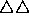

| The Dole Queue |
In a serious attempt to downsize (reduce) the dole queue, The New National Green Labour Rhinoceros Party has decided on the following strategy. Every day all dole applicants will be placed in a large circle, facing inwards. Someone is arbitrarily chosen as number 1, and the rest are numbered counter-clockwise up to N (who will be standing on 1's left). Starting from 1 and moving counter-clockwise, one labour official counts off k applicants, while another official starts from N and moves clockwise, counting m applicants. The two who are chosen are then sent off for retraining; if both officials pick the same person she (he) is sent off to become a politician. Each official then starts counting again at the next available person and the process continues until no-one is left. Note that the two victims (sorry, trainees) leave the ring simultaneously, so it is possible for one official to count a person already selected by the other official.
Write a program that will successively read in (in that order) the three numbers (N, k and m; k, m > 0, 0 < N < 20) and determine the order in which the applicants are sent off for retraining. Each set of three numbers will be on a separate line and the end of data will be signalled by three zeroes (0 0 0).
For each triplet, output a single line of numbers specifying the order in which people are chosen. Each number should be in a field of 3 characters. For pairs of numbers list the person chosen by the counter-clockwise official first. Separate successive pairs (or singletons) by commas (but there should not be a trailing comma).
10 4 3 0 0 0
 4 8, 9 5, 3 1, 2 6, 10, 7
where represents a space.